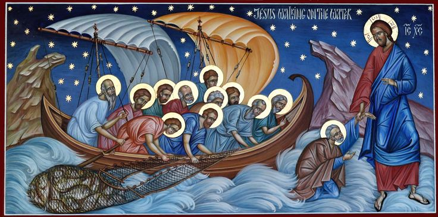
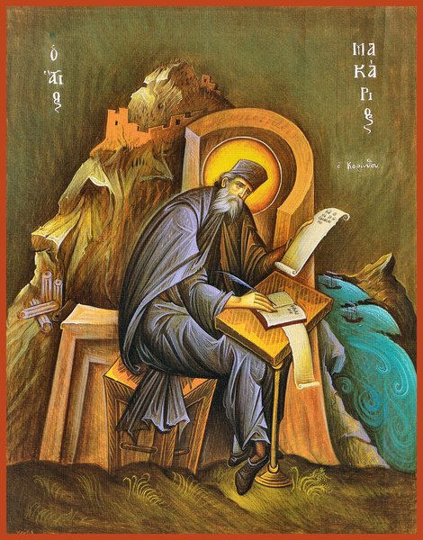
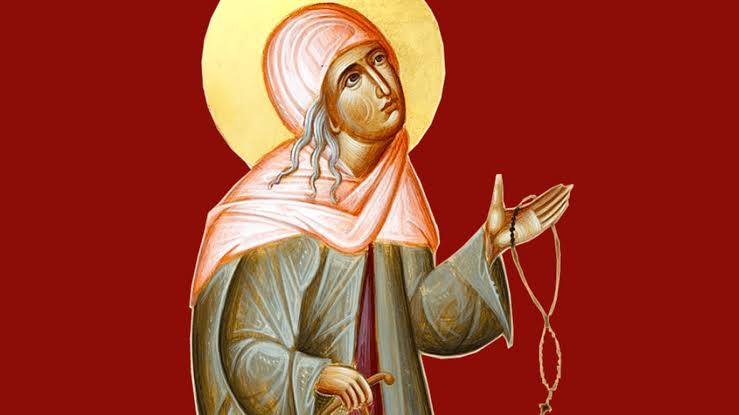

About This Section
This is where I put the deeper stuff, longer reflections on the books and ideas I've been working through in my reception into Orthodoxy. It's more personal and less polished than the blog, but I think that's okay. Some things take time to figure out how to say.
What Is the Philokalia (And Why It Matters)
 When I started seriously exploring Orthodox Christianity, people kept mentioning this book called the Philokalia. It came up constantly, in Orthodox forums, in podcasts about the faith, in lists of recommended reading for catechumens. I eventually ordered a copy and it sat on my desk for two weeks before I opened it, because it looked intimidating. Five volumes. Dense. Written in the 4th through 15th centuries. Not exactly casual reading.
The word "Philokalia" comes from the Greek φιλοκαλία, meaning love of beauty, or love of the good and beautiful. It's a compilation of writings by Orthodox Christian monks and mystics spanning about eleven centuries, compiled in the 18th century by Saint Nikodemos of the Holy Mountain and Saint Makarios of Corinth and first published in 1782. The texts were gathered from the monks of Mount Athos in Greece, the peninsula that has been the spiritual heartland of Orthodox monasticism for over a thousand years and remains so today.
The Philokalia is essentially a manual for the spiritual life. Not theology in the academic sense, not doctrinal definitions, but practical instruction in how to actually pursue Theosis. How to pray. How to fight against thoughts that pull you away from God. How to cultivate stillness of the mind. The monastic tradition it comes from is called hesychasm, from the Greek word for stillness or silence, and the whole project is about interior transformation: the long, slow process of becoming more like what you were made to be.
"Blessed is the person who has come to know the weakness and infirmity of the soul, for to him belongs the kingdom of heaven."
— Saint Makarios of Egypt, from the Philokalia
I'm not going to pretend I've read all of it or understood everything I have read. I'm working through it slowly, which is apparently the right way to do it. The Philokalia is not a book you read cover to cover in a week. It's more like a reference work for the interior life, something you return to over years.
What strikes me most is how practical it is. These writers, Evagrios Pontikos, Saint John Climacus, Saint Maximos the Confessor, Saint Gregory Palamas, are not writing abstract philosophy. They are writing from experience. They spent years in the desert, in caves, in monasteries, genuinely wrestling with their inner lives, and what they wrote is the record of what they found. It reads like field notes from an interior expedition that most of us have never attempted.
The central teaching that runs through all of it is this: the human person is made for union with God, and that union is possible. Not as some distant reward after death, but now, through prayer and the grace of the Holy Spirit and the life of the Church. This is Theosis. And the Philokalia is one of the most comprehensive maps of the territory I've come across.
Reading the Philokalia made me realize something that I hadn't fully understood before, even after months of researching Orthodoxy: the Church has a remedy and a structure for the spiritual life that no other sect of Christianity has. Not just a theology, not just a history, not just a liturgy, but a complete, tested, living system for interior transformation. The hesychast tradition, the Jesus Prayer, the guidance of a spiritual father, the fasting cycles, the feasts, the saints whose lives you read as models. It all fits together into something that actually addresses the human problem at the level where the problem lives. Not just intellectually. In the body, in the passions, in the soul.
This is what I find most extraordinary about the Philokalia: it was written between the 4th and 15th centuries by men who lived in deserts and caves and monasteries, and yet the remedies it offers are shockingly modern. The chapters on intrusive thoughts, on how to deal with anger before it takes root, on the relationship between the body and the spiritual state of the mind, on attachment and craving and the mechanics of self-deception. These are describing things that contemporary psychology is still trying to figure out with neuroscience. The Fathers were there first, working purely from prayer and attentive observation of their own interior lives. And they left instructions.
Some Key Figures in the Philokalia
| Name | Era | Key Contribution |
|---|---|---|
| Evagrios Pontikos | 4th century | Developed the systematic analysis of thoughts and passions; foundational for all later hesychast teaching. |
| Saint John Climacus | 6th to 7th century | Author of The Ladder of Divine Ascent, one of the most-read works of Orthodox spirituality. Describes 30 steps of spiritual development. |
| Saint Maximos the Confessor | 7th century | Deep theologian of love and cosmic redemption. Had his tongue cut out and his hand cut off by the Emperor for refusing to compromise his theology. |
| Saint Symeon the New Theologian | 10th to 11th century | Insisted that the vision of God was possible for ordinary Christians, not just monks. Controversial in his own time; now venerated as one of only three saints called "Theologian." |
| Saint Gregory Palamas | 14th century | Defended the possibility of the direct experience of God against attacks from Western scholastic theology. His theology of the "divine energies" is foundational to Orthodox understanding of Theosis. |
If you're curious about Orthodox spirituality and don't know where to start, I'd actually recommend beginning with The Way of a Pilgrim, a 19th century Russian spiritual classic about a peasant who sets out to learn how to "pray without ceasing" and discovers the Jesus Prayer. It's short, it's readable, it's beautiful, and it gives you a feel for what the Philokalia is pointing toward before you wade into the Philokalia itself.
After that, try Saint John Climacus. And then, when you're ready, the Philokalia. In whatever volume, on whatever day, at whatever pace. These books aren't going anywhere.
Fools for Christ: The Saints Who Chose Strangeness
This is the part of Orthodox Christianity that took me the longest to understand, and that I now find genuinely one of the most interesting things about the tradition. The Holy Fools were saints who deliberately acted insane, bizarre, and socially unacceptable as a form of spiritual discipline and prophetic witness. They're called yurodivye in Russian, and there are a lot of them in the Orthodox calendar.
The concept comes from Saint Paul: "We are fools for Christ's sake" (1 Corinthians 4:10). The idea is that the wisdom of this world is foolishness to God, and that by embracing what the world considers shameful or stupid, a person can cut through the social structures that prevent honest spiritual life. It's radical, it's strange, and it's completely real within the tradition.
The most famous Holy Fool in Russian Orthodoxy is Saint Basil the Blessed. The Cathedral in Moscow's Red Square is named after him. He lived in 16th century Moscow during the reign of Ivan the Terrible, wandered the streets naked in all weather, clanged chains, talked to himself, and apparently had the ability to see through walls and into people's souls. Ivan the Terrible, who was genuinely terrifying and had almost everyone around him executed at some point, was reportedly afraid of Basil. The saint rebuked him publicly several times for his sins and got away with it. When Basil died in 1552, Ivan himself carried his coffin.
Why would anyone choose to live this way? The explanations I've come across vary. Some Holy Fools embraced the life to avoid the trap of spiritual pride. If everyone thinks you're crazy, you can't get attached to your own reputation for holiness. Some did it as a form of prophecy, acting out the spiritual state of the society around them in symbolic ways that made people pay attention. Some seemed to be responding to a genuine divine call that they couldn't explain in conventional terms.
"Let no man deceive himself. If any man among you seemeth to be wise in this world, let him become a fool, that he may be wise."
— 1 Corinthians 3:18
What I find remarkable about this tradition is that the Church took it seriously. The Holy Fools aren't marginal figures in Orthodox sanctity. Many of them are among the most beloved saints of Russia, Ukraine, and Greece. Saint Andrew the Fool-for-Christ (4th century Byzantine) is one of the most important figures in Orthodox eschatology. Saint Xenia of Saint Petersburg (18th century) is one of the most venerated saints of the Russian Orthodox Church, still the subject of active pilgrimage at her chapel in Petersburg.
Xenia's story is one I keep coming back to. She was a widow from a noble family who, after her husband's sudden death, gave away everything she owned, put on her husband's military uniform, and announced that Xenia had died but her husband Andrei Petrov was still alive. She walked the streets of Petersburg for 45 years, accepting nothing, sleeping outside, occasionally appearing to do night construction work on a church being built in the city (workers found the bricks laid by morning, and no one could explain it). She was sought out as a counsellor and spiritual guide by people from all walks of life. She died sometime in the late 18th century and was canonized in 1988.
I don't think I could explain why stories like this move me the way they do. There's something about the total rejection of everything the world calls important: reputation, comfort, social standing, sanity itself , in pursuit of something that can't be named or measured. It's the most extreme form of the interior life I've been trying to understand through the Philokalia. And it seems to have actually worked, for these people. They were genuinely transformed into something the people around them recognized as holy.
A Few Holy Fools Worth Knowing
- Saint Basil the Blessed (Moscow, 1469 to 1552). He rebuked Ivan the Terrible and got away with it. The famous cathedral on Red Square is his.
- Saint Xenia of Saint Petersburg (18th century). She abandoned her identity after her husband's death and wandered the streets for 45 years. One of the most beloved Russian Orthodox saints.
- Saint Andrew the Fool-for-Christ (Constantinople, 4th century). He witnessed the famous vision of the Mother of God in the Blachernae Church, which became the feast of the Protection of the Theotokos.
- Saint Symeon of Emesa (6th century, Syria). He spent years as a monk in the desert, then spent the rest of his life in the city pretending to be a madman, secretly performing miracles and helping the poor.
- Saint Isadora of Tabennisi (4th century, Egypt). She was the first known female Holy Fool and pretended to be mentally ill for years in her monastery while secretly living a life of intense prayer and service.
I think the Holy Fools represent something that gets lost in a lot of contemporary Christianity: the idea that genuine holiness might look very strange from the outside. That the saint and the apparent madman might be the same person. That God's economy is just completely different from ours, and sometimes the only way to demonstrate that is to live it out in a way that makes no conventional sense.
Anyway. That's what I've been reading about. If you've never heard of this tradition before, I hope it gives you something to think about. And if you're Orthodox and already know all of this. I'm sure there are fifty Holy Fools I should have included. I'm still learning.
What I'm Currently Reading
Some recommendations if you want to go deeper into the Orthodox tradition. These are all books I've personally worked through, in roughly the order I'd suggest reading them:
- The Way of a Pilgrim (Anonymous, 19th century Russia). The best entry point into Orthodox spirituality. A peasant learns the Jesus Prayer and walks across Russia. It's short, beautiful, and accessible.
- The Orthodox Way by Kallistos Ware: one of the best single introductions to Orthodox theology in English. Ware was an Oxford professor and eventually a bishop; he writes clearly and with genuine spiritual depth.
- The Ladder of Divine Ascent by Saint John Climacus: the classic guide to the spiritual life, written by a 6th century abbot for his monks. Still profoundly relevant and more readable than you'd expect.
- The Philokalia (5 volumes). Start with Volume 1. Read slowly. Come back to it over years.
- Life of Saint Seraphim of Sarov: the life of one of the most beloved Russian saints (1754 to 1833). He spent years in the forest alone, then emerged to become a spiritual father to thousands. His conversation with Nikolai Motovilov about the acquisition of the Holy Spirit is one of the most remarkable documents in all of Christian literature.
- The Brothers Karamazov by Dostoevsky: technically a novel, but the Elder Zosima's teachings in Book VI are a masterclass in Orthodox spirituality. And it's one of the greatest novels ever written.
Quotes That Have Stayed With Me
These are the ones I keep coming back to. Some I found early, some later. All of them hit differently depending on what season of life you're in when you read them.
"I screamed at God for the starving child until I saw the starving child was God screaming at me."
"We are searching for something, but we do not know what... This is because we have turned away from God, who is the source of all good... You are afraid of death, but you are not afraid of a life without God... Do not say, 'this happened by chance...' In all that exists there is nothing disorderly, nothing indefinite, nothing without purpose, nothing by chance."
— St. Seraphim of Sarov / Fr. Seraphim Rose
"Suffering is an indication of another Kingdom which we look to. If being Christian meant being 'happy' in this life, we wouldn't need the Kingdom of Heaven."
— St. John of Kronstadt
"The Lord, as an artful physician, subjects us to various trials, sorrows, illnesses, and misfortunes, in order to purify us like gold in the furnace. A soul that is hardened in various sins does not easily undergo cleansing and healing, but has to be forced to a great extent, and only through lengthy experience in patience and suffering does it become accustomed to virtue and begins to love God, from Whom it was alienated after becoming attached to all kinds of mortal sins. Such is the purpose of the trials and tribulations sent to us by God in this life."
— St. John of Kronstadt
A Final Note From Me
I started this site as a class project. That's the honest answer to the question of how it began. But somewhere between choosing the topic and building it out, it stopped being a class project and became something else. A place to put things I didn't have anywhere else to put them.
I'm not a theologian. I'm not a monk. I'm a university student in British Columbia who stumbled on a word in a history book and couldn't stop pulling the thread. And I'm still pulling it. I don't have all of this figured out. Most days I feel like I'm at the very beginning of understanding any of it, which is apparently exactly where the Fathers say you should feel if you're paying attention.
What I do know is this: the questions I was carrying when I started looking, about suffering, about guilt, about what any of this is for, about why beauty exists alongside so much pain, have not disappeared. But they feel different now. Less like weights and more like orientations. Things that point you somewhere instead of just pressing down on you.
If you've made it to this page, you're probably someone who's also pulling a thread. I hope something here was useful to you, or at least interesting. I'll keep adding to it as I learn more.
With love and a lot of ongoing confusion,
Ruth Anna